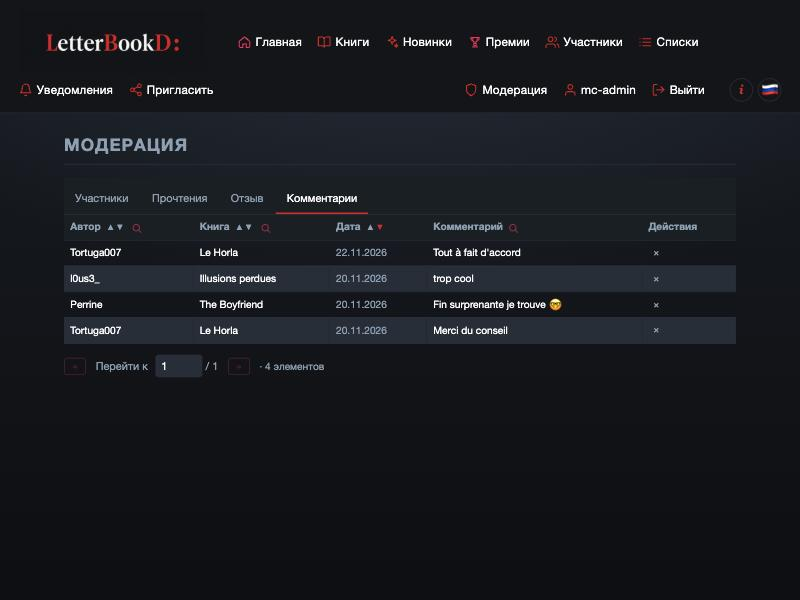

Модерация — Комментарии Только для админов
Зачем это нужно: Модерация вложенных обсуждений под отзывами. Неуместный комментарий удаляется точечно, без влияния на родительский отзыв и другие ответы в ветке.

Как это устроено
Таблица: Автор (ник комментатора), Книга (книга, чей отзыв содержит комментарий), Дата, Комментарий (фрагмент, сортируется и фильтруется), Действия (крестик для удаления). Удаление комментария атомарно: остальные комментарии той же ветки сохраняются.
Цепочки действий
Каждая строка — это триггер в интерфейсе, модалка или форма, которые он открывает, и результат.
| Триггер | Модалка / Поля | Эффект |
|---|---|---|
| Значки сортировки и фильтра (лупа в колонке «Комментарий») | — | Тот же механизм, что и на других вкладках. |
| Кнопка крестика (×) в строке | Подтверждающая POST-форма. | Удаляет комментарий. Ветка остаётся целой (без каскадного удаления), родительский отзыв не затрагивается. |